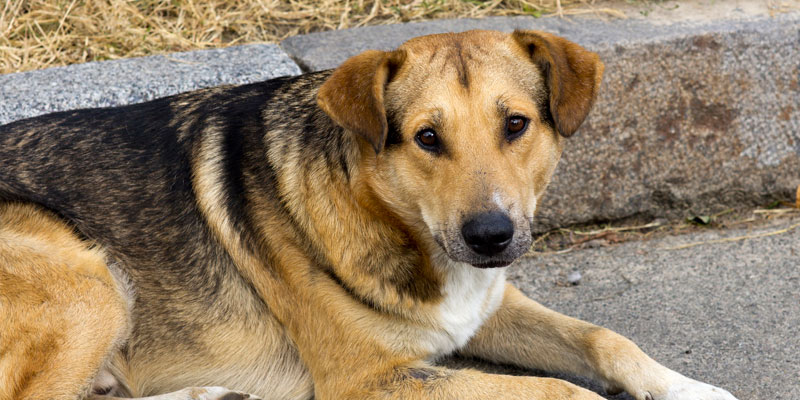
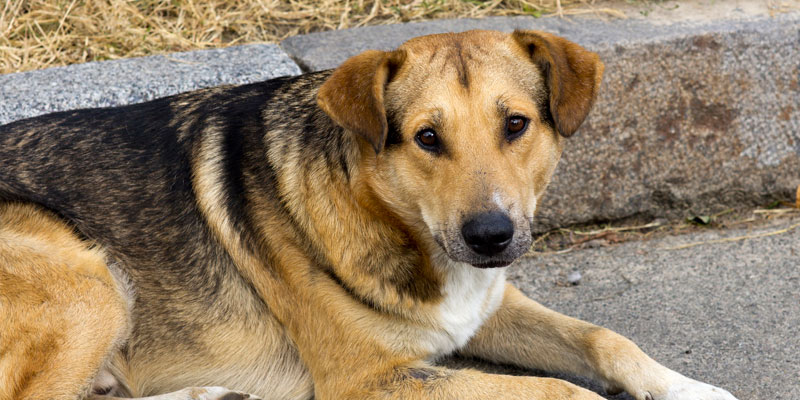

Perros
ONG - AYUDA A UN PELUDO
Nuestra organización cumple con la labor de cuidar y buscar hogar a nuestros amigos peludos que se encuentran en situación calle, es por eso que decidimos crear este sitio web para hacer más fácil la adopción de su futura mascota. Esperamos que encuentre a su compañero ideal y que se comprometa a cuidarlo y quererlo para siempre :)
Nuestros integrantes:
Nuestras secciones de ayuda:
Perros |